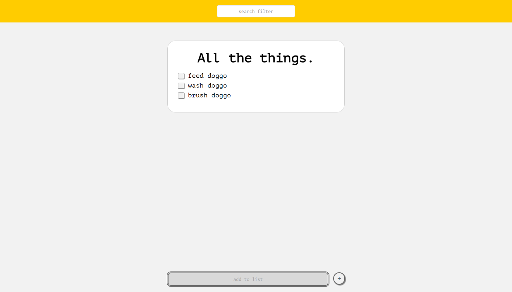
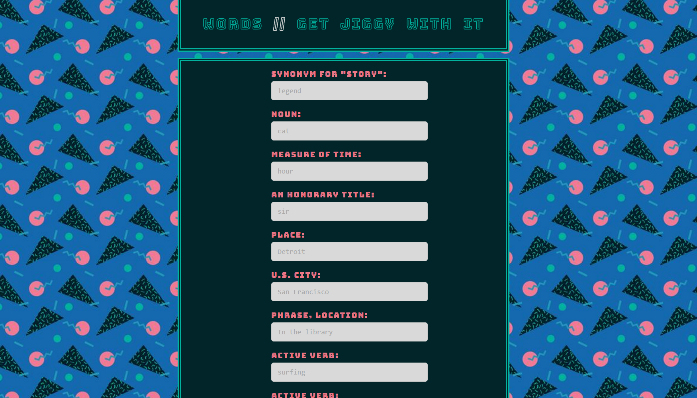
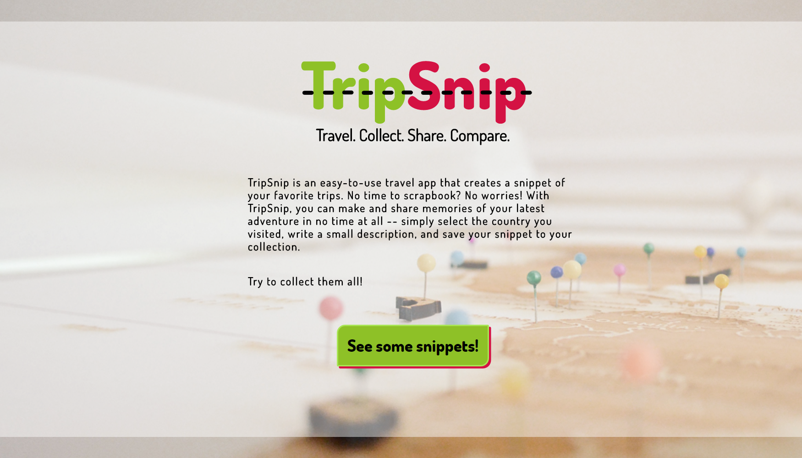

A seat reservation app for a small theatre featuring CSS animations and jQuery.

A simple shopping cart app constructed using vanilla JavaScript, featuring CSS and DOM manipulation.

A to-do list application made with AngularJS.

A totally fly single-page 90's MadLibs app built with AngularJS, utilizing persistent form data through a factory.

A travel companion web application built entirely in AngularJS. The app pulls data from both an external API (RESTcountries) as well as user input to populate users' "snippet" collection.